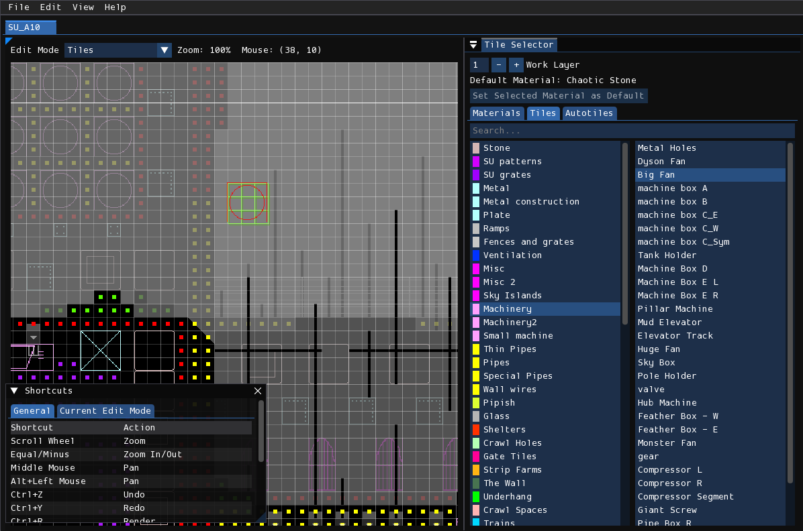
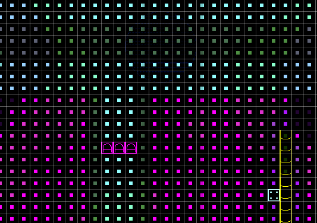
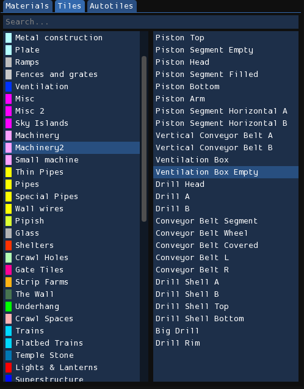
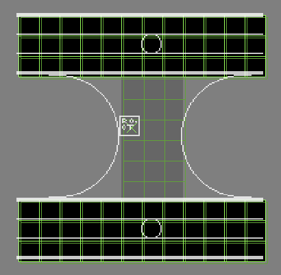
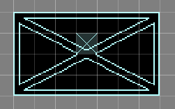
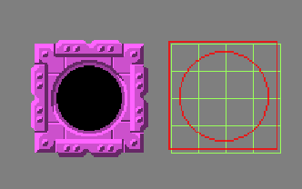
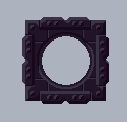
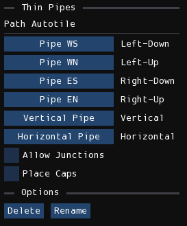

Tiles

The tile editor is where you decorate the level with materials and tiles. Editing tiles and materials is a crucial part of the level editing process, and is normally done after creating an initial block-out of the level in the geometry editor, and usually afterwards is worked on in tandem with the geometry editor. Forming a basic understanding of the principles of tiling is key to designing a good-looking level (although this manual will not delve into the general principles of tile design).Materials

Materials are used to essentially apply textures to the geometry of your level. I say "essentially", because different materials have different processes of detailing the geometry. Some are simply large repeated textures overlaid onto the affected area, some add certain graphics onto edges and corners, and some, like the Trash family and Small Pipes, are procedurally generated details.
Selection
Material editing can be accessed by switching to the "Materials" tab in the tile selector window. With that tab active, you can select which material you want to paint the level with. The left column shows the list of material categories, and the right column shows the list of materials available for the selected category. Furthermore, hovering over an item on the right column will show a pop-up preview of the material's graphics over the mouse.
Placement
Applied materials are shown in the level view as small solid-colored squares positioned in the center of a cell.
To paint geometry with a material, simply hold down the left mouse button. To erase materials from geometry, hold down the right mouse button. You can also change the size of the brush by holding down Shift and using the scroll wheel. Additionally, holding down Shift and the left or right mouse button and then dragging your mouse will allow you to fill or erase a rectangular area.
Note
Materials will not be visualized if the cell is also occupied by a tile. Removing the tile will expose the material underneath, but any materials obscured by tiles will not be saved in the file, due to a limitation of the level editor save format.
Modifiers
There are two placement/erasure modifiers you can use while painting. The first is "Force Geometry", which is activated by holding down the G key. This will allow you to paint onto empty space, where Rained will then automatically place wall geometry onto the area to allow the material to be placed. The second is "Disallow Overwrite", activated by holding down the R key. It will prevent overwriting materials in cells, making it so you can only draw on cells without an already assigned material. It can also be active simultaneously with the "Force Geometry" modifier.
Tiles
A tile is a premade visual asset that you can place in a level. Each tile was drawn by someone using image editing software, depicting things such as metal beams, pipes, stones, machines, and other set pieces.
Functionally, they behave similarly to tiles in tile-based games/level editors, but there are a few things specific to Rain World's version of tiles.
- Tiles can be of any grid-aligned width and height.
- Each tile has a geometry specification, which limits/forces the pattern of geometry the tile can be placed on.
- Tiles can have one or two layers of depth.
- Parts of a tile can be removed and the tile will still render as normal.
Placement
In order to place a tile, you first must select the tile you want to place in the tile selector, depicted below. The left column displays tile categories, and the right column displays tiles in the currently selected tile category. Hovering over an item in the right column will show a pop-up preview of the tile, and clicking on it will select that tile.

With a tile selected and your mouse over the level view, a preview of the tile will display over your mouse, which is called the "tile cursor". Pressing down the left mouse button will place down the tile at that position. and pressing down the right mouse button will remove the tile at the cell that is being hovered over. You can also place or remove a rectangular area of tiles by holding Shift before pressing either the left or right mouse button.
Info
You may switch work layers either by pressing Tab or interacting with the "Work Layer" input box located on the very top of the "Tile Selector" window.
Geometry Specifications/Requirements
Each tile specifies the pattern of geometry that the tile occupies. This is referred to as "geometry/tile specs", "geometry/tile requirements", or simply "specs". These specs in Rained are shown as green outlines behind the tile cursor in the level view. The specs for the first layer are shown as a bright green, and the specs for the second layer, if demanded by the tile, are shown as a dark green.

The requirement of each individual cell should be obvious—as it shows an outline of the required geometry type at that cell—except for two cases:
- Unspecified: This will not show an outline at a given cell. This means that any kind of geometry is tolerated at that space, and if the tile is placed down with the "Force Geometry" modifier that space will not be modified.
- Air: This will show as a cross, meaning that the geometry at that space must be an air cell.
If the geometry underneath a tile does not match the geometry specifications, the tile cursor will be tinted red, and you will not be able to place the tile.
This is a soft limitation, however: even with mismatched geometry, the tile will still render normally.
Modifiers
Normally, you will not be able to place down a tile if the geometry under the cursor does not meet the specifications for the selected tile. In this case, the cursor tile preview will be colored red instead of white. However, you can force Rained to place down the tile regardless of the underlying geometry if you have either the "Force Placement" or "Force Geometry" modifiers active.
In order to activate the "Force Placement" modifier, you must have the F key held down. Once this is active, you may place down a tile regardless of if the underlying geometry fits the requirements of tile's specs.
The "Force Geometry" modifier, activated by holding down the G key, will instead, upon placement, modify the geometry underneath the newly placed tile to fit the tile specs. This way, you don't have to labouriously place the geometry down for any large or complex tiles. Additionally, if you remove a tile with "Force Geometry" active, it will remove the tile's required geometry along with the tile itself.
The "Ignore Materials" modifier, active when holding down the R key, will disallow erasing materials.
These modifiers also work with the rectangular-area fill/erase feature, but "Force Geometry" has a special behavior if you tap the key for a short amount of time while the rectangle is active. If G is tapped, it will place the required geometry for the already-placed tiles underneath the rectangle, and close the rectangle. Otherwise, geometry-forced tiles will be placed if the modifier is held down when the mouse button is released.
Heads and Bodies
Rain World handles tiles differently than one would intuit. Normally, a tile appears as and behaves like a singular whole when editing, but, in reality, a tile, when whole, is a composition of multiple atomic parts: every cell within the tile is assigned to be a tile body, and the center of the tile is assigned to be the tile head.

The tile head is required for a tile to exist, as it is the component that asserts the existence of the tile. It is surrounded by zero or more tile bodies, each of which store a reference to the location of their corresponding tile head. Rained knows which portion of the texture to render for each tile body based off their position relative to its tile head.
Tip
You may highlight each tile head in the level by enabling View > Tile Heads.
It is valid for a tile to be missing some tile bodies. You can do so by force-placing another tile over another one, which will remove some tile bodies of the tile being overlapped. However, you cannot place a tile in such a way that it overwrites the tile head, no matter what modifier you use, since, by doing so, all tile bodies reference by the tile head will become invalid.
In regards to rendering, tile bodies that are missing do not cause the render to be missing those parts of the rendered tile; the tile in its entirety will still be rendered. However, it does affect how the geometry at that tile body is rendered. Without a tile body, the geometry will be rendered overlapping with the tile graphics, whereas with a tile body there will be no rendered geometry at that cell.
Tile Graphics
The image displayed by default in Rained for the visual representation of tiles is not what actually gets rendered in-game. Rather, it is a crude representation of the tile. These images are, by default, used in place of the real tile graphics while editing the level due to concerns of performance and video memory. However, you can choose to have Rained render tile graphics using their actual in-game representation by toggling View > Tile Graphics. Out of the box, tiles will be colored using their respective category colors, but for a more accurate in-game representation you may also enable palette rendering through the View > Palettes window.
Note that the tile graphics preview is inaccurate in regards to geometry rendering. When rendering, any cell that is occupied by a tile head or tile body will not have their geometry rendered so that the tile can display properly. This therefore means that if a tile requires solid geometry for any cell but has empty space in that portion of the graphic, Rained will display that cell as solid even though that cell will be invisible when rendering. A specific example of a tile that exhibits this behavior is "Ventilation Box Empty".


Autotiles
Certain tiles are meant to be parts of a larger structure. Examples include fence tiles, SU patterns, SU grates, and pipes. The autotiling system is used to aid in the process of creating these structures.
To use autotiles, you first must select the "Autotiles" tab in the Tile Selector window. There will be a list of autotiles under different drop-down categories. Select one from one of these categories in order to be able to use it.
Types
There are two different types of autotiles: Path autotiles and Rectangle autotiles.
Rectangle autotiles
These are used to create tile structures from a rectangular area. With the autotile selected, click and drag in the level view to define the rectangular area you want to modify. Once let go, the area will be autotiled.
Path autotiles
These are used to create tile structures from a path. With the autotile selected, begin the path by pressing down the left mouse button, and move your mouse around the level to create nodes in the path. Upon letting go of the left mouse button, the path will be autotiled.
Tip
Hold Shift to draw straight lines.
Custom autotiles
You can create path autotiles without the need for scripting. To do so, press the Create Autotile button, enter the name and category of the autotile, and press OK. Custom path autotiles, once selected, will have this as their configuration interface:

Info
As you may infer, some built-in autotiles use this custom autotile system.
With this interface, you may change which tiles the path autotile will use. Each tile needs to be 1x1 in size. You can also choose if you want the path you create to use junctions or place specific tiles on their caps, by turning on the relevant checkbox and specifying the tiles needed for the respective feature.
Info
For custom rectangle autotiles and advanced path autotiles, you will need to write Lua scripts. Check out what is located inside the scripts directory for information on how to do so.